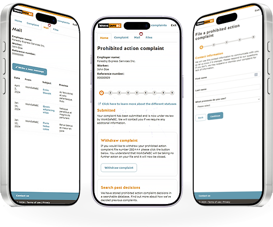
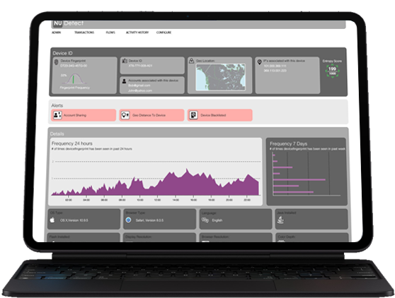
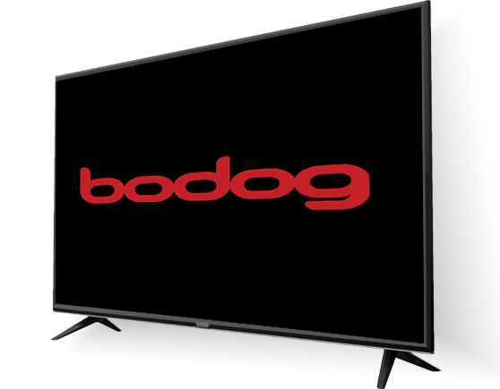
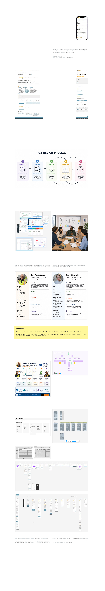
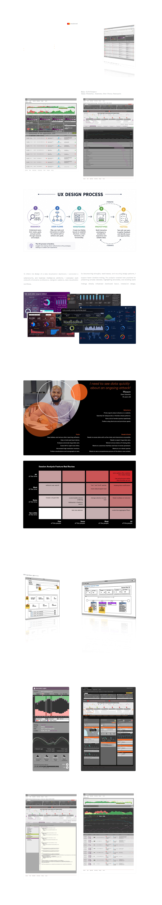

UXUI Design
by Sandy IsaacsIntuitive interfaces
that drive measurable results
Case studies

WorkSafeBC
Prohibited Action Complaint, responsive app
WorkSafeBC provides information and services to prevent workplace injuries, diseases and deaths in BC. The Prohibited Action Complaint application allows workers to report misconduct by employers or unions.
View case studyUI | UX Designer
Figma

NuData Security, a Mastercard company
Dashboard and data visualisations
NuData Security is a critical element of the Mastercard Cyber and Intelligence business which is helping to create a secure and inclusive digital future with a range of identity, cyber and AI technologies.
View case studyUI Designer
Ps
Ai

Bodog
Visual ID
The Bodog Sportsbook offers the latest NFL Odds, NBA betting options, a huge variety of NHL odds, the best MLB odds and Super Bowl in Canada.
Graphic Designer
Ps
Ai

Prohibited Action ComplaintsThe ClientWorkSafeBC was established by provincial legislation as an agency with themandate to oversee a no-fault insurance system for the workplace.WorkSafeBC partners with employers and workers in B.C. to do the following:• Promote the prevention of workplace injury, illness, and diseaseRehabilitate those who are injured, and provide timely return to work• Provide fair compensation to replace workers' loss of wages whilerecovering from injuries• Ensure sound financial management for a viable workers' compensationsystemThe projectProhibited Action ComplaintsIf you are a worker who becomes aware of unsafe or unhealthy conditions atthe workplace and report it to your employer, your union, or WorkSafeBC, youare raising a health or safety issue. If you do so, you are legally exercising aright or carrying out a duty under the Workers Compensation Act.IItt iiss iilllleeggaall ffoorr aann eemmppllooyyeerr oorr uunniioonn ttoo ppeennaalliizzee yyoouu ffoorr rraaiissiinngg aa hheeaalltthh oorrsafety issue at work. If you experience negative actions from your employer orunion after raising a health and safety concern, you can submit a prohibitedaction complaint.Design briefProblem:Solution:UUssiinngg tthhee eexxiissttiinngg pprroocceessss bbootthh wwoorrkkeerrss aanndd eemmppllooyyeerrss wwoouulldd ffaacceeDDeessiiggnn aa rreessppoonnssiivvee oonnlliinnee ccoommppllaaiinntt ffoorrmm tthhaatt wwoorrkkeerrss ffiinndd eeaassyy ttoo ccoommpplleetteesignificant challenges navigating the complaint process. Workers who filedand understand as well as a prescreening questionnaire that setsa grievance often complained about ambiguity of where they were in theexpectations about the complaint process. We will also design an onlineprocess , what resources where available to them and what to expect next. portal that both workers and employers can use as a hub for communicationEmployers also expressed frustration with a lack of information about thewith WorkSafeBC about the ongoing status of their complaint as well asstatus of a complaint and access to documentation. Additionally the caseupload documents and evidence.workers struggled to manage and categorize submissions from workersand employers.Design ProcessEmpathize:Competitive analysis, user interviews, user personas, key findingsCompetitive analysisUser interviewsI undertook a survey of how other insurance agencies tackledWWee ccoonndduucctteedd uusseerr iinntteerrvviieewwss wwiitthh wwoorrkkeerrss aanndd eemmppllooyyeerrss aass wweellll aass ssttaaffffsimilar problems to understand their strengths and weakness andat WorkSafeBC to understand pain points and frustrations with the existingidentify strategies for how we could approach the problem.process. Patterns would soon emerge that we could target as chiefcandidates for improvement in our design. Through walkthroughs of theentire complaint process we created journey maps to understand and trackthe complete business flow from end to end.. This would be used to identifyopportunities for streamlining and optimising the business process throughdesign andautomation.User personasBy regularly cross-referencing these personas I ensured that the design After conducting interviews we created user personas based on archetype ofstayed relevant to the intended audience. the people involved. These personas could be used as a sounding board forthe prototypes that were to be created, and help guide decisions during thedesign and ideation phase.DefinitionUser journeys, Site mapUUsseerr jjoouurrnneeyyss wweerree ccrreeaatteedd ffoorr wwoorrkkeerrss aanndd ssttaaffff aatt WWoorrkkSSaaffeeBBCC ttoo mmaapp oouuttthe business flow of the current state and desired future state in conjunctionwith the Dev team. With the project goals in mind of consolidating the entirecomplaint process into an online submission and portal site controlledthrough a Microsoft Dynamics 365 backend, we identified opportunities forautomation and improvement for the overall user experience.Site maps were created based on the desired future state that would providethe necessary functionality to achieve the project goals. A modulararchitecture was identified as offering the most flexibility and usefulness tostakeholders.IdeationWire frames, mock ups, functional prototypesLow fidelity wireframes are created to quickly conceptualize how the sitemaps would come to life on both mobile and desktop screens. Pages can beorganized based on content and structure begins to take shape. Thewireframes take on the aspect of an architectural plan.Mockups start to tackle the objective of combining content, branding andusability. We can identify usability issues by using different UI patterns andcomponents while keeping in mind and referring to our User Personas.Content copy is also fine tuned by the business and UX designer to ensure itis accurate and understandable to the user.Once mockups have been stabilized we can move on to create functionalprototypes using HTML, CSS, and JavaScript to give a high fidelity experienceduring user testing and ensure that the development team can easily andaccurately implement the design.TestingRevision and Hand offArmed with insights from user testing the prototype is tweaked and prepared TThhee pprroottoottyyppeess aarree tteesstteedd aaggaaiinnsstt rreelleevvaanntt uusseerr.. TThhee rreeccrruuiittmmeenntt ccrriitteerriiaaincludes naive as well as experienced user, employers as well as third party for hand-off to the dev team. During this phase frequent check-ins arerequired with the developers to ensure that the applications are consistent representatives. They will often relate issues they had in the past using thewith the design as a form of quality control. existing system and given the opportunity to give their subjective opinion onthe new interface. Watching users interact with the new UI is an opportunityto see it with fresh eyes and identify blind spots. Often times this leads tofine tuning and rethinking certain strategies.
NuDetect Dashboard UI/UXThe ClientNuDetect by NuData Security, a Mastercard® company uses behavioralanalytics and passive biometrics to identify good (digital) users in real-timewith confidence, without adding friction—assessing hundreds of device,location, passive biometric and behavioral signals against past user behaviorand known behaviors.The dashboard provides robust investigative tools and data visualizations foranalyst.The projectNuDetect is NuData Security’s flagship behavioral biometrics platform, The project focused on improving data visualization, investigationdesigned to help organizations identify legitimate users and detect workflows, and usability across high-volume monitoring environments.fraudulent activity based on how people interact online. As part of the UX Through user research, workflow analysis, wireframing, prototyping, anddesign team, I contributed to the redesign and enhancement of the usability testing, we created a more intuitive experience that enabledNuDetect dashboard, transforming complex risk analysis data into analysts to identify threats faster, reduce investigation time, and makeactionable insights for fraud analysts and security teams.more confident risk-based decisions.Design processResearchCompetitive analysisBy documenting strengths, weaknesses, and recurring design patterns, I TToo iinnffoorrmm tthhee ddeessiiggnn ooff aa ddaattaa vviissuuaalliizzaattiioonn ddaasshhbbooaarrdd,, II ccoonndduucctteedd aacompetitive UX analysis of leading analytics, fraud detection, identified opportunities to improve usability, reduce cognitive load, andsupport faster decision-making. The analysis revealed best practices for cybersecurity, and business intelligence platforms. I evaluated eachpresenting complex datasets, highlighting anomalies, and enabling users product's information architecture, navigation patterns, data visualizationtechniques, filtering mechanisms, alert systems, and investigation to move efficiently from high-level insights to detailed investigations. Thesefindings directly influenced dashboard layout, interaction design, workflows.prioritization of key metrics, and the overall user experience strategy.User research and personasTToo bbeetttteerr uunnddeerrssttaanndd tthhee nneeeeddss ooff ffrraauudd aannaallyyssttss,, sseeccuurriittyy iinnvveessttiiggaattoorrss,, I analyzed recurring patterns across participants and translated theseand risk management teams, I planned and conducted stakeholder and findings into detailed user personas that represented key user groups,user interviews focused on how organizations use NuData’s behavioral their motivations, challenges, technical expertise, and operational needs.biometrics platform to identify legitimate users and detect fraudulent These personas became foundational design tools that guided productactivity. Through structured interviews, workflow mapping, and synthesis strategy, dashboard design, feature prioritization, and usabilitysessions, I gathered insights into users' goals, decision-making processes, improvements throughout the development of the NuDetect platform.pain points, and reporting requirements.WireframesBuilding on insights gathered from user interviews and personas, I led the The wireframes focused on helping fraud analysts quickly identifyideation and wireframing process for NuData's behavioral biometricssuspicious activity, investigate behavioral signals, and take action withplatform. I facilitated collaborative design workshops and exploredminimal cognitive load. By iterating on concepts with stakeholders andmultiple concepts for dashboard layouts, investigation workflows, riskincorporating user feedback throughout the design process, I establishedscoring visualizations, and alert management experiences. Through rapid a scalable foundation that informed high-fidelity prototypes and the finalsketching and low-fidelity wireframes, I translated complex userNuDetect user experience.requirements into clear information architecture and intuitive user flows.PrototypesAs the UI designer for NuData's behavioral biometrics platform, I Using interactive prototypes, I validated design concepts, demonstratedtransformed wireframes and user requirements into polished, high-fidelity end-to-end user journeys, and gathered feedback before development,mockups and interactive prototypes. I designed a modern, data-driven helping reduce implementation risk and ensuring the final NuDetectinterface that balanced complex security analytics with clarity and usability, experience was both visually engaging and highly effective for securityensuring fraud analysts could quickly interpret behavioral risk signals and operations teams.investigate suspicious activity. Working closely with product managers,developers, and stakeholders, I established visual design standards,created reusable UI components, and refined dashboard layouts, charts,tables, and investigation workflows.